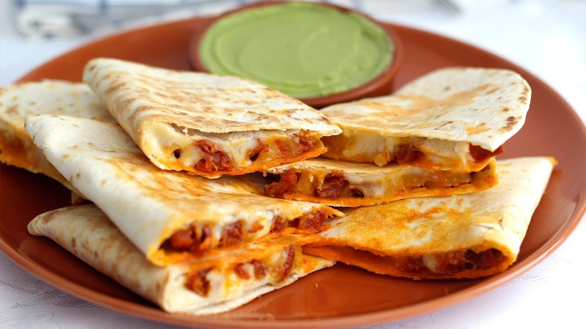

Quesadilla de queso

Una quesadilla que en efecto, lleva queso
Una receta ancestral y milenaria cuando no quieres comerte
una bola entera de queso Oaxaca.
ingredientes
- Tortilla
- Queso
- Comal o algo que parezca uno (de preferencia caliente)
Instrucciones
- Colocar la tortila en una base plana
- Colocar el queso en medio
- doblarla
- Colocarla en el comal caliente
- Darte cuenta que si era mejor comerte de una mordida toda la bola de queso